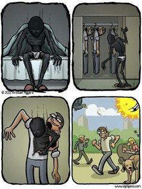

What is Depression?
Depression is a mood disorder that is associated with a group of conditions that lower a person's mood. Depression or "major depressive disorder" is very common today and can affect how a person acts and feels. Depression can lead to different physical and emotional problems that decrease a person's ability to function normally.
Causes and Effects
Some causes for depression may be from genetics, if the patient has a family history of depression. Another cause of depression may come from trauma or stress in one's life, for example, from the loss of a loved one or job.
- Loss of interest in activities
- Weight loss or weight gain
- Too little or too much sleep
- The constant feeling or worthlessness or guilt
- Difficulty with thinking or making decisions
- Thoughts of suicide
Who Does it Affect?
Depression can affect people of all ages, races, genders, and backgrounds. Simply put, depression can affect anyone, however, there are several factors that play a role in depression, such as genetics, personality, environmental factors, and biochemistry.
Treatment
A common treatment for depression is medication prescribed by a doctor. People struggling with depression may also consider seeking medical care through a therapist or doctor. People may also choose to get through depression through self-help and coping. Several methods that people use to help with depression include regular exercise, a healthy diet, and a good sleep schedule.
- Medication or "Antidepressants" that are able to modify one's brain chemistry.
- Psychotherapy or "talk therapy" is also used to treat depression. This form of therapy focuses on the problem-solving aspect.
- Electroconvulsive therapy is a medical treatment for patients with severe depression.
- Self-help is a common method used by patients with depression. It involves changing a person's routine to be healthier.